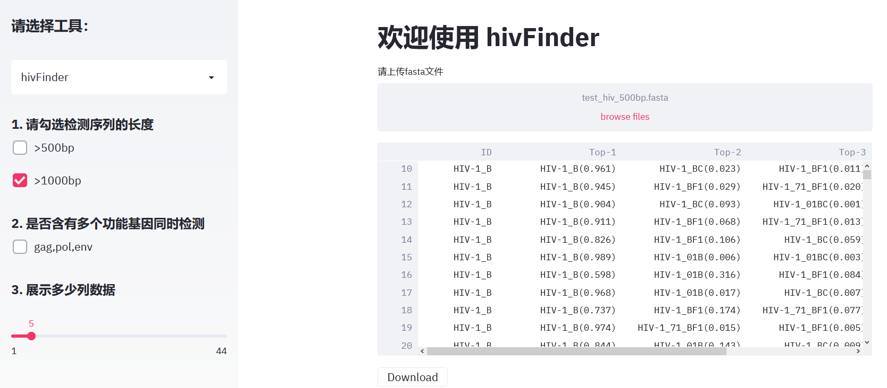
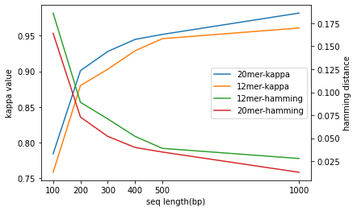
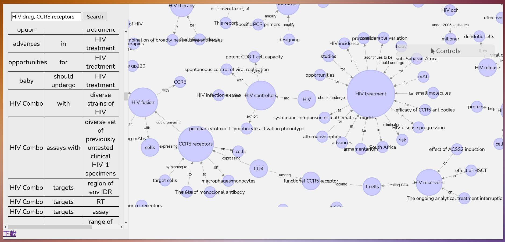
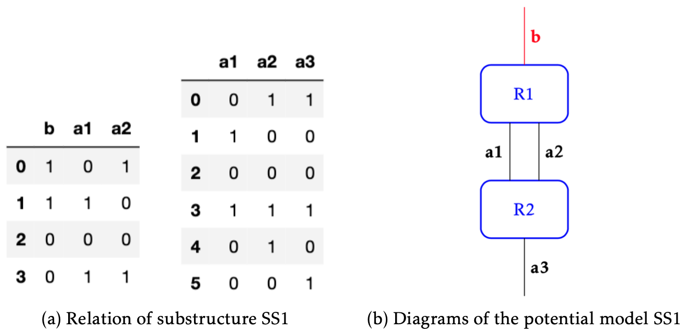

I’m a graduate student with backgrounds in computer science and biology. During my graduate study in Shanghai, my main research was about the mechanisms of addiction through studying the rat’s behavior under extinction of conditioned place aversion. Just because the multi-disciplinary training, I am able to combine these two disciplines and solve the problems in biology. Meanwhile I’m a faster learner. When I was doing my project about using machine learning to classify HIV gene sequences. I had read about 40 papers before handing this problem. And the final model was reliable with a kappa value more than 0.9, which had applied two patents. This project was done by python using pytorch framework on Linux platform. Even though I changed my major to computer science, I’m still curiosity about the mystery of biology. So my ideal job is to combine these two disciplines. As you see, these are my strengths.
EDUCATION
M.S in Computer & Information Science
SUNY Polytechnic Institute, Utica, NY
Major Areas: Software Engineering, Systems and Architectures, Algorithms and Theory, Artificial Intelligence and Modeling
Major Areas: Neuroscience, Pharmacology, Rat Surgery, Statistical Analysis
Publication: Wang YJ, &Hang A, &Zhao ZX, et al.(2016) “kappa Opioid receptor activation in different brain regions differentially modulates anxiety-related behaviors in mice”. Neuropharmacology. 110: 92-101.
B.S in Bioengineering
Agriculture University of Hebei, Hebei, China
Major Areas: Genetics, Microbiology, Cytology, Biochemistry, Fermentation
WORK EXPERIENCE
Machine Learning Engineer
Chinese National Human Genome Center, Beijing, China
Built a HIV gene sequences classification model which could classify 184 kinds of HIV sub-types
Built a pipeline of creating knowledge graph, which included back-end and front-end which was built using Flask
Two pipelines of auto summary generation was built. One was an unsupervised method based on maximum marginal relevance (MMR). The other one used a deep learning method Google Pegasus.
Advanced Technical Representative
JingYang Tonewall ( Health Care Providers and Services), Beijing, China
Searched and learned the latest knowledge about quality control needed in the clinical lab
Analyzed clinical lab data and handled customer’s problems about quality control
Trained sales representatives and discovered new customers in the market to increase sale
PROJECTS
Deep learning - Building the HIV classification model
This project aimed to classify 184 kinds of HIV gene sequences in the database, which was done by building a classification model from scratch by deep learning. I’ve read forty papers about gene sequences classification within two weeks before building a model and the final model was reliable with kappa value greater than 0.9 , which had applied for two patents . A web interface was created by using Streamlit for user’s convenience.
The purpose of this project was to extract the concerned information from scientific papers, e.g. the relations among specific genes, diseases and drugs. This project included the following procedures:
extracting triples from scientific papers, which included converting pdf format papers into text format files, co-reference resolution, filtering noise in text files, extracting triples;
entity disambiguation through embedding by Bert model and computing the cosine similarity among entities;
building a website app using Flask to show relations of triples through a table and a graph based on keywords search. If a keyword didn't exist in the entities, a most similar entity would replace the keyword.
This is my graduate project. It is about implementing the system algorithms using python language. The algorithms were developed by my advisor about thirty years ago. And I’m the first one who use python to implement these algorithms.
After that, I thought could I use these algorithms to solve the problems in biology? I found that it’s feasible to decide the relationship between human behavior and brain regions by system theory.
The main idea is that the functional magnetic resonance imaging (fMRI) method can be used to show the states of the diverse regions in the brain corresponding to specific behaviors or emotions. In my project, system theory is used to figure out which parts of the brain participated in the behavior as well as how these regions contributed to controlling the behavior. It may speed up the construction of long-range connectivity of various brain areas and give insight into the experimental designs for the neural science of mental behaviors.
[Skills Developed:] Python, Pandas, numpy
SHOWCASE
The web page of HIV classification

Metrics of the machine learning models for HIV classification

The web page of Knowledge Graph

Relations and diagrams of substructures SS1 in the project of System Theory application
